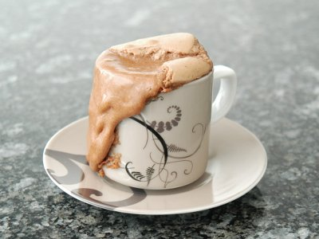

| Zutaten für 4 Personen: | |
| 1 | Ei |
| 1 | Eigelb |
| 60g | Zucker |
| 1 Prise | Salz |
| 50g | dunkle Schokolade |
| 50g | Butter |
| 50g | Mehl |
Vor- und Zubereitungszeit: 20 Minuten. Backzeit 15 Minuten.
Benötigt 4 Espressotassen von je 1 dl Inhalt.
Die Espresso Tassen gut befetten und mit Zucker "bestäuben".
Den Ofen auf 180°C vorheizen.
Das Ei, das zusätzliche Eigelb, Zucker und Salz in einer Schüssel mit den Schwingbesen des Handrührgerätes rühren, bis die Masse heller wird.
Schokolade mit der Butter im Wasserbad schmelzen. (Auf meinem Induktionsherd geht das auch direkt, auf Stufe 3, ohne, dass das zu heiss wird.)
Geschmolzene Schokolade-Butter Mischung unter die Ei-Zucker Mischung mischen.
Das Mehl unter die Masse mischen und in die Tassen geben.
Die Tassen auf ein Blech stellen und in der Mitte des vorgeheizten Ofens 15 Minuten bei 180°C backen.
Herausnehmen und sofort servieren. Die Küchlein sollten innen noch leicht flüssig sein. Kann mit Vanilleglace oder Schlagrahm serviert werden.
Lässt sich vorbereiten: Schokolade-Küchlein ca. 1/2 Tag im Voraus ofenfertig zubereiten, zugedeckt im Kühlschrank aufbewahren. Die Backzeit verlängert sich dabei um 7 Minuten.
Pro Person 17g Fett, 5g Eiweiss, 31g Kohlenhydrate, 1243 kJ / 297 kcal
Von Patrick Rüegg am 13. Nov 2009 erhalten. Anscheinend aus Betty Bossi Zeitung 8/08 Seite 10
Kam hoch gelobt. Muss es gleich ausprobieren.
Am 20.2.2010 zubereitet und es schmeckt gefährlich gut. Volle Punkte! RE
@LINKBACK_TAG@ @WAKELOCK@